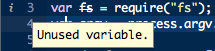

Language Analysis
For JavaScript files, Cloud9 provides analysis using a combination of our own analysis tools, as well as JSHint (specifically for Javascript code). Our language analysis can't detect if your program is correct, fast, or has memory leaks, but it can save you time by spotting things like undeclared variables, syntax errors, or other preventable typos.
When Cloud9 detects an issue with your code, an icon appears in the gutter for the offending lines of code. There are three types of identifiers available for your code:
- Informational (
 ): these are non-critical, non-dangerous updates about your code
): these are non-critical, non-dangerous updates about your code - Warnings (
 ): these are potentially incorrect pieces of code
): these are potentially incorrect pieces of code - Errors (
 ): these are incorrect lines of code that will almost certainly throw a runtime error when you try to run your script
): these are incorrect lines of code that will almost certainly throw a runtime error when you try to run your script
If you hover over any of these icons in the gutter, you'll get a pop-up that presents some information as to what, exactly, the problem is. For example, suppose we have a variable declared, called fs, that is never used:

Notice also that fs has a strikethrough, to provide further visual clues that something is not quite right.
If you're concerned with the level of information that's listed in the gutter, you can always configure its "strictness" in the IDE preferences. For example, you could choose to hide every icon that isn't a warning or an error.
Configuring Global Options
JSHint provides additional configuration options that Cloud9 incorporates on a per-file basis. Typically, you declare these options as comments at the very top of a file, like this:
/*jshint curly:true, debug:true */For a full list of the JSHint configutation options, please check the documentation page describing them.